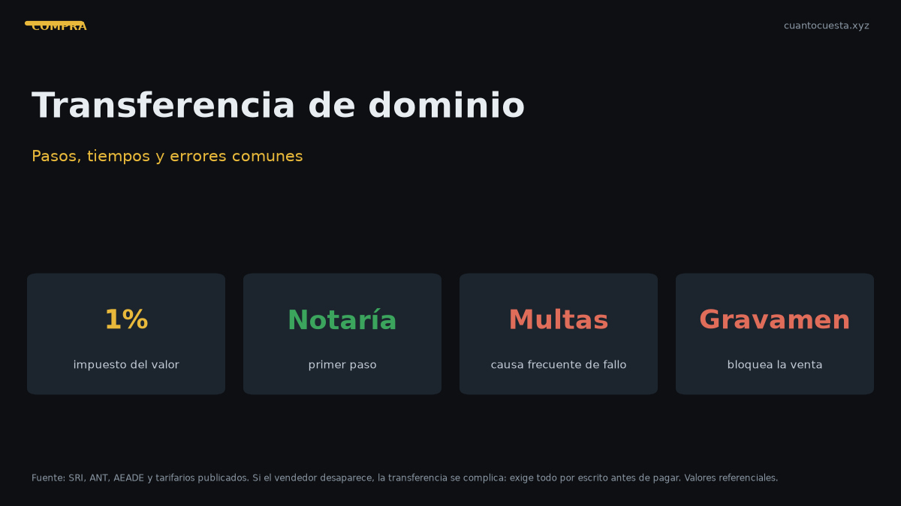

Transferencia de dominio en Ecuador: pasos, tiempos y errores comunes
Transferencia de dominio en Ecuador: tiempos reales, por qué se cae el trámite (multas, gravamen), costos totales y qué hacer si el vendedor desaparece.

La transferencia de dominio en Ecuador tarda, en condiciones normales, entre pocos días y un par de semanas, según la ciudad y la carga de la oficina. Falla casi siempre por las mismas cuatro razones: multas pendientes, gravamen vigente, cambio de motor no declarado o datos del vendedor incorrectos.
El costo del trámite no es un solo valor: el servicio en la ANT ronda los $10, pero el impuesto es del 1% sobre el mayor valor entre el contrato y el avalúo, más notaría, especie y certificados.
El proceso paso a paso
- Verificar el vehículo antes de firmar. Consulta la placa: multas, gravámenes y avalúo. Sin este paso, todo lo demás es apostar.
- Firmar el contrato de compraventa. Con precio, datos de ambas partes y datos del vehículo.
- Reconocimiento de firmas ante notario. Obligatorio: el contrato legalizado es la base del trámite.
- Pagar el impuesto del 1% sobre el mayor entre el precio del contrato y el avalúo del SRI.
- Obtener el certificado de improntas (motor y chasis) cuando se exige.
- Presentar la solicitud en la ANT o el GAD habilitado, con todos los requisitos.
- Retirar la nueva especie de matrícula ($25) a nombre del nuevo propietario.
- Actualizar el registro y guardar todos los comprobantes.
Tiempos reales por etapa
| Etapa | Tiempo referencial |
|---|---|
| Verificación de placa | Minutos |
| Contrato y reconocimiento de firmas | Mismo día |
| Pago del impuesto del 1% | Mismo día |
| Certificado de improntas | 1 a 2 días hábiles |
| Solicitud y revisión en ANT/GAD | 1 a 5 días hábiles |
| Emisión de la nueva especie | 1 a 3 días hábiles |
| Total típico | 3 días a 2 semanas |
Los tiempos varían por ciudad, por carga de la oficina y por si hay observaciones. Un trámite con observaciones se devuelve y el reloj vuelve a empezar desde el inicio.
Por qué falla una transferencia
Multas e infracciones pendientes
El sistema bloquea el traspaso si el vehículo tiene multas. Deben pagarse antes de presentar la solicitud. Ojo con el detalle: un convenio de pago vencido vuelve a bloquear aunque el conductor crea estar al día.
Gravamen o reserva de dominio
Si el auto tiene una deuda prendaria (crédito con garantía del vehículo) o reserva de dominio, no se puede transferir hasta que se levante. El levantamiento lo gestiona el acreedor; si el vendedor aún debe el crédito, el trámite no avanza.
Un gravamen no visible al momento de la venta es uno de los problemas más comunes en la compra de usados. Verifícalo antes de pagar, no después. Si aparece cuando ya entregaste el dinero, recuperarlo es mucho más difícil que no entregarlo.
Cambio de motor sin declarar
Si el motor fue reemplazado y no se declaró, el número del registro no coincide con el físico. Sin regularizar el cambio de características, la transferencia se traba.
Datos del vendedor incorrectos
Nombres mal escritos, cédula vencida, dirección desactualizada o un vendedor que no es el propietario real. Si vende "con poder", el poder debe estar vigente y ser suficiente para la venta.
Requisitos incompletos
Si falta un documento, el trámite se devuelve. La lista habitual:
- Cédula de ambos.
- Certificado de votación.
- Formulario de solicitud.
- Matrícula o CUV.
- Contrato legalizado.
- Certificado de improntas.
- Sin infracciones pendientes.
Costos totales reales
| Concepto | Costo referencial |
|---|---|
| Servicio de transferencia de dominio (ANT) | $10,00 |
| Impuesto del 1% | Sobre el mayor entre contrato y avalúo |
| Reconocimiento de firmas (notaría) | Varía por notaría |
| Certificado de improntas | Según entidad |
| Nueva especie de matrícula | $25,00 |
| Certificado Único Vehicular (CUV) | $7,50 |
El impuesto del 1% es la parte variable y la más importante. Si declaras $10.000 y el avalúo del SRI es $12.000, pagas sobre $12.000. No sirve declarar menos: el SRI toma el valor mayor.
El papel de la notaría
La notaría legaliza el contrato y reconoce firmas; no hace la transferencia. Sin el contrato legalizado, la ANT no procesa el trámite. Y algo importante: la notaría no verifica deudas ni gravámenes — eso lo tienes que verificar tú antes de firmar.
Si el vendedor desaparece
Es un riesgo real y frecuente. Si no puedes hacer la transferencia con el vendedor presente:
- No entregues el dinero sin transferencia o sin un acuerdo legal claro.
- Si ya pagaste y el vendedor desapareció, tendrás que recurrir a un abogado para lograr la transferencia forzosa o la resolución del contrato.
- Guarda todo: contrato, comprobantes de pago, mensajes y datos del vendedor.
- Un poder vigente puede evitar el problema: si alguien vende por otro, el poder debe permitirlo y estar inscrito.
- Mientras el auto siga a nombre del vendedor, las multas e infracciones posteriores llegan a su nombre — pero el auto lo usas tú, sin respaldo legal pleno.
Cómo comprar sin riesgos
- Verifica gravámenes y multas antes de pagar.
- Firma el contrato en notaría, con ambas partes presentes.
- Haz el trámite el mismo día o al día siguiente, no "la próxima semana".
- No pagues el 100% sin transferencia, o pacta pagos contra avance del trámite.
- Revisa que el motor y el chasis coincidan con los documentos.
- Pide el CUV y el historial para confirmar que el auto es lo que dicen que es.
Resumen práctico
- La transferencia tarda de 3 días a 2 semanas en condiciones normales.
- Falla por multas, gravamen, motor no declarado o datos incorrectos.
- El impuesto es del 1% sobre el mayor entre contrato y avalúo: no se evita declarando menos.
- La notaría legaliza firmas; no verifica deudas: eso es tu trabajo.
- Costo total: servicio (~$10) más 1%, notaría, improntas y especie ($25).
- Si el vendedor desaparece sin transferir, necesitas abogado. Evítalo verificando antes de pagar.
Los valores, requisitos y tiempos son referenciales y varían por ciudad y por normativa vigente. Confirma el monto del impuesto, la lista de requisitos y el estado del vehículo en el SRI y la ANT antes de cerrar cualquier compra.
Sigue leyendo
Cómo detectar un carro chocado o inundado en Ecuador
Señales de pintura repintada, óxido en zonas raras, olor a humedad y tornillería marcada: cómo
Cuántos kilómetros dura un motor en Ecuador y cómo alargar su vida útil
Un motor bien mantenido dura 200.000-300.000 km. Cómo afectan la altura de la sierra y el tráfi
Precio justo de un carro usado en Ecuador: cómo calcularlo antes de negociar
Método de depreciación anual, uso del avalúo del SRI y señales de estafa para calcular y negoci
Qué revisar antes de comprar un carro usado en Ecuador (checklist completo)
Checklist mecánico, documentos y pruebas para revisar un carro usado en Ecuador antes de pagar:
Cómo verificar que un carro usado no tenga gravámenes ni multas en Ecuador
Cómo consultar gravámenes, reserva de dominio y multas de un carro usado en Ecuador antes de co
Cómo usamos estos datos
Las cifras de esta guía provienen de fuentes públicas oficiales y tarifarios de concesionarios publicados. Los valores son referenciales: tasas municipales, promociones y precios de repuestos varían. Verifica siempre en la entidad o concesionario antes de decidir.